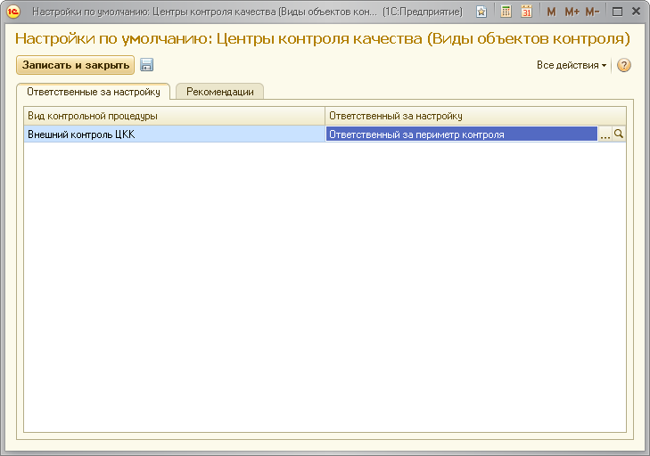

Данная форма поможет вам указать настройки, которые будут использоваться как настройки по умолчанию для всех Центров Контроля Качества, регистрируемых в данном ЦКК.
Во вкладке "Ответственные за настройку" вы можете указать роли пользователей по умолчанию, ответственных за выполнения задач по настройке контрольных процедур.

Данный объект описывает внешний по отношению к текущему ЦКК Центр Контроля Качества, работоспособность которого мы контролируем. Каждый ЦКК имеет наименование, которое должно однозначно определять его в информационной системе и которое задаётся при первоначальной настройке. Наименование используется при контроле работоспособности ЦКК.